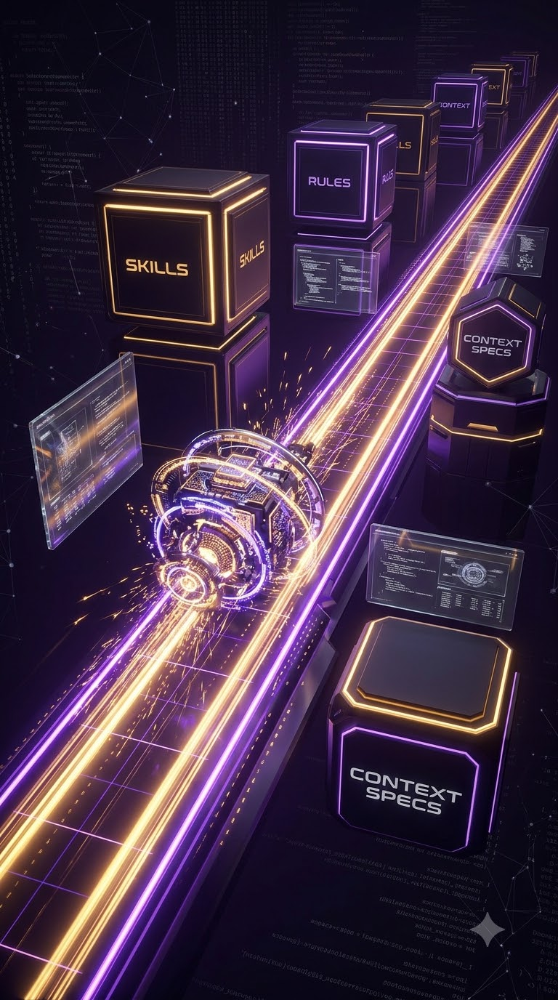
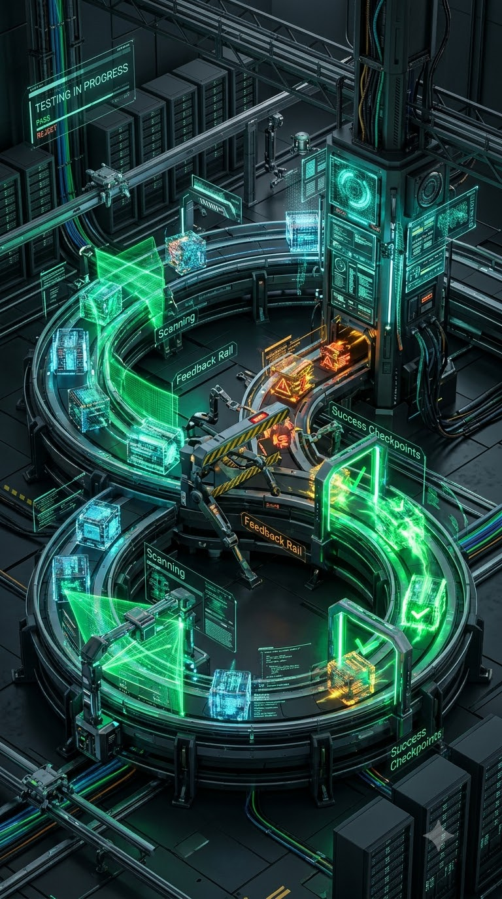
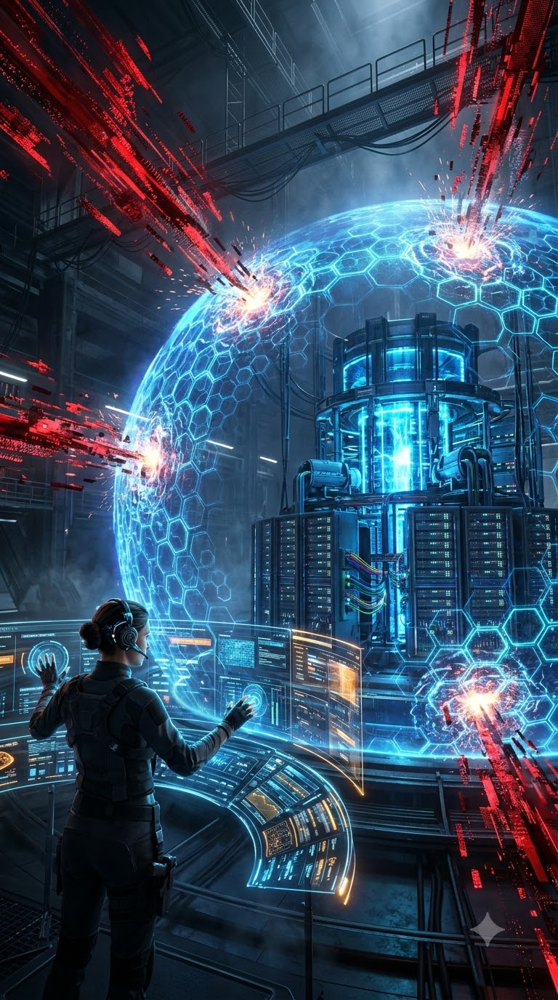

말이 코드가 되는 시대
바이브 코딩(Vibe Coding)의 이상과 현실, 그리고 프로덕션 엔지니어링
강사 소개
차민규
AI Engineer · Agentic AI Team
LG AI & Big Data Group
주요 경력 (Career)
- 現 LG AI & Big Data Group, Agentic AI 팀 AI Engineer
- 前 우리은행 (Bank Woori), AI전략센터 AI플랫폼팀
- 前 LG AX Group, AI & Big Data Analytics 팀
학력 (Education)
- • University of Central Florida 컴퓨터공학 박사수료
- • GIST (광주과학기술원) 전자공학 석사
- • 한국외국어대학교 컴퓨터공학 학사
3시간 튜토리얼 로드맵 (총 180분)
기초 이론 & 본질
에이전트 연구 계보와 바이브 코딩의 본질, '시스템 지휘자'의 4대 핵심 역량
실전 팁 & 핸즈온 실습
실제 바이브 코딩 팁을 배우며 노트북으로 즉시 코드를 작성·실행하는 워크숍
비용, 런칭 & 가드레일
토큰 80~90% 절감, 완성된 코드의 1시간 글로벌 배포와 프로덕션 보안
강의 세부 내용 아젠다 (Chapter 01 ~ 08)
계보 : 챗봇에서 자율 에이전트까지 (2022 ~ 2026)
LLM은 더 이상 질문에 그럴듯한 텍스트로 답하는 '말동무'가 아닙니다. 단일 모놀리식의 좌절과 학술적 분업 연구, 그리고 추론 모델을 거쳐 현재의 자율 워크스페이스로 진화한 5단계 패러다임 로드맵을 추적합니다.
ChatGPT
1회성 텍스트 질의응답. 외부 실행 도구와 환경 관찰(눈)이 전무했던 수동 챗봇.
AutoGPT · ReAct
Thought-Act-Observe 루프 태동. 단일 컨텍스트 오염과 연쇄 환각의 좌절.
MetaGPT · CoALA
SOP 명세 강제로 환각 차단. 인지과학 4대 메모리(작업·일화·의미·절차) 체계화.
o1/o3 · Repo Map
Test-Time Compute로 실행 전 가상 검증. Tree-sitter + PageRank로 토큰 80% 절감.
Grok · Worktree
클라우드 지속형 Outer Loop와 초고속 국소 Inner Loop의 물리적 분리 체제.
1.1 프롬프트의 종말과 ReAct 패러다임
"완벽한 프롬프트"라는 환상
수천 줄의 프롬프트를 한 번에 던져 완성된 코드를 얻으려던 시도의 필연적 실패:
손과 눈을 부여한 ReAct 루프
ReAct(Yao et al., ICLR 2023): LLM에게 손(도구 실행)과 눈(환경 관찰)을 주어 상태 머신으로 진화:
1.2 AutoGPT(2023.03)의 등장과 Monolithic의 좌절
단일 에이전트의 '자율 멀티턴' 패러다임
인간이 질문-답을 매 턴 반복하는 대신, 에이전트 1명이 단일 목표를 접수하고 백그라운드에서 4단계 루프를 스스로 멀티턴하여 결과를 반환하는 혁신 제시:
왜 실전 소프트웨어 개발에 실패했는가?
단일 LLM 컨텍스트에 모든 역할을 몰아넣은 Monolithic 구조의 치명적 한계:
1.3 2023년 하반기 ~ 2024년 학술 연구 대폭발 : Multi-Agent & CoALA
소프트웨어 회사를 객체지향 클래스 & SOP로 추상화한 Multi-Agent 구조
자연어 잡담을 차단하고, SOP(표준운영절차)와 정형 명세(PRD, Design, Code, Test)를 강제하여 연쇄 환각을 극복:
가상 SW 기업 모방. CEO-CTO-개발자-테스터 간 Multi-agent Chat-Chain 단계별 교차 검증.
가중치 미수정. 언어적 자가 반성 버퍼로 오류를 피드백해 Self-healing 달성.
인지과학 기반: Working / Episodic / Semantic / Procedural Memory 4분할 체계화.
1.4 SWE-bench와 2025년 추론 모델(Test-Time Compute) 혁신
자가 치유(Self-Healing)와 SWE-bench 실증
실제 GitHub 2,294개 오픈소스 이슈 해결 벤치마크가 증명한 피드백 루프의 위력:
맥락 없이 파일 전체 주입 시 100%에 가깝게 실패
검색, 국소 수정, Stderr 관찰 루프로 비약적 상승
텍스트 코드뿐 아니라 브라우저 렌더링 화면, Figma 디자인 시안, 웹 UI 버그를 시각적으로 보고 고치는 멀티모달 자율 엔지니어링 연구로 확장.
2025년: '추론 모델' 결합과 장기 실행(Long-Horizon)
OpenAI o1/o3, Claude 3.5/3.7 Sonnet 등 Test-Time Compute(추론 시간 연산)의 에이전트 이식:
과거에는 에이전트가 잘못된 코드를 짜면 되돌아오지 못했으나, 모델 내부의 Hidden CoT(생각 사슬)를 통해 코드를 실행하기 전 가상으로 수십 가지 경우의 수를 사전 시뮬레이션 및 Self-Correction.
수십만 줄의 코드베이스를 토큰 낭비 없이 전달하기 위해, Tree-sitter(AST 분석기)와 PageRank 알고리즘을 결합해 현재 작업과 가장 연관된 핵심 파일·심볼 관계도만 추출:
1.5 2026 에이전트 아키텍처 : Outer-Inner Loop와 2대 진영
자율 워크스페이스와 'Outer Loop & Inner Loop'의 분리
단일 세션에 기획·탐색·코딩·테스트·PR을 다 넣으면 컨텍스트(200k+) 오염으로 지능이 급격히 저하되므로, 역할과 실행 환경을 물리적으로 2단계 분리:
IDE 인라인 페어 에이전트
Cursor, Windsurf, Antigravity IDE 등
- • 실시간 탭 완성 & 인라인 에딧: 개발자의 타이핑 호흡에 맞춰 3초 안에 디프(Diff)를 제안하고 즉시 피드백 수용
- • 개발자의 즉각적 통제: 에디터 내부에서 Human-AI 실시간 협업 페어 프로그래밍
자율 백그라운드 태스크 러너
Devin, SWE-agent, 클라우드 컨테이너 에이전트
- • 비동기 분업: 이슈 URL을 전달하면 독립 클라우드 샌드박스에서 20분간 코딩·테스트 후 PR 제출
- • 2026 툴체인의 필연성: 장기 실행을 버티려면 절차 기억(Skills), 영속 기억(LLM-Wiki), 인지 격리(Aside)가 필수!
본질 : 바이브 코딩이란 무엇인가
"I vibe code. I see stuff, say stuff, run stuff, and it mostly works."
Andrej Karpathy의 이 한마디는 프로그래밍의 문법 장벽을 무너뜨렸지만, 동시에 새로운 기술 부채와 환상을 낳았습니다.
2.1 바이브 코딩 : 챗봇 스니펫에서 '자율 프로젝트 합성'으로
함수 하나를 물어보고 손수 복사-붙여넣기하던 챗봇의 시대를 지나, 프롬프트 하나로 전체 프로젝트를 자율 구축하는 패러다임 전환:
요청하신 Node.js 인증 및 결제 함수 스니펫입니다:
2.2 소프트웨어 추상화 계층의 대전환 : 말이 코드가 되는 원리
과거 프로그래밍 언어가 사람과 바이너리 사이를 번역했다면, 이제 사람 앞에 AI 에이전트 계층이 새롭게 적층되어 사람의 말을 코드로 번역합니다.
인간과 바이너리 사이의 '언어'
사람이 0과 1의 전기 신호를 직접 다룰 수 없어, 기계와 소통하기 위해 C·Python·Rust 등 프로그래밍 언어와 컴파일러라는 번역 계층을 쌓았습니다.
사람 앞에 쌓인 'AI 에이전트' 계층
이제 사람이 신택스(문법)를 직접 타이핑하지 않고, 사람 바로 앞에 AI 에이전트가 붙어 자연어 의도(Intent)를 소스 코드로 실시간 번역합니다.
타이피스트에서 '아키텍트'로 승격
개발자의 핵심 역량은 세부 문법 암기에서 고수준 의도(Intent) 명세, 시스템 인터페이스 설계, 그리고 컴파일·테스트 검증 게이트 통제로 전환됩니다.
2.3 바이브 코딩의 런타임 아키텍처 : LLM Server(뇌)와 Local Client(손·발)
자연어 의도(Intent)가 실제 동작하는 애플리케이션으로 완성되기까지, 클라우드 지능 엔진과 로컬 실행 런타임이 주고받는 자율 오케스트레이션 루프
단순 오타 수정은 초고속 Flash 모델(0s)로 처리하고, 아키텍처 재설계 및 의존성 분석은 Deep Thinking(o1/o3/Claude 3.7)을 호출하여 사전에 버그를 가상 시뮬레이션합니다.
단순 텍스트 출력을 넘어, 로컬 런타임에서 CLI 쉘 명령어 수행, Atomic 파일 수정, MCP 프로토콜을 통한 DB 쿼리, 실제 브라우저 기동까지 에이전트가 직접 수행합니다.
실행 중 컴파일 에러, Linter 경고, 브라우저 콘솔 에러가 발생하면 사람이 디버깅할 필요 없이 자동 캡처된 Stderr가 LLM의 다음 턴 입력으로 환류되어 자가 치유를 완료합니다.
2.4 이상과 현실 (Reality Check) : 한눈에 보는 6대 착각과 프로덕션 현실
"말만 하면 1시간 만에 SaaS가 완성된다"는 대중적 환상과, 현장 엔지니어가 마주하는 참혹한 프로덕션 현실의 대비:
| 핵심 차원 | 대중이 꿈꾸는 이상 (The Illusion) | 프로덕션 현장의 현실 (The Reality) |
|---|---|---|
| 1. 개발 방식 | 말 몇 마디로 1시간 만에 SaaS·게임 완성 | 파일 20개 넘어가면 AI 기억 상실 & 컨텍스트 표류 발생 |
| 2. 백엔드 구축 | "DB와 로그인 서버 전부 짜줘" 하면 완성 | 바닥부터 짜면 설계 파탄. BaaS 레고 조립 필수 |
| 3. 언어 선택 | AI가 가장 잘 아는 언어니까 Python 최고 | 동적 런타임 에러 지옥. TS/Rust 컴파일러 피드백 압도적 |
| 4. 비용 / 지연 | 월 $20 구독료면 무제한 앱 개발 | 무차별 탐색으로 하루 $50~100 요금 폭탄(Tokenpocalypse) |
| 5. 보안 / 운영 | AI가 안전한 프로덕션을 자동 구축 | 에러 끄려다 RLS 전면 개방(USING true) 전 고객 DB 유출 |
| 6. 작업 흐름 | 단일 채팅창에 기획부터 배포까지 요청 | 직렬 병목. Git Worktree 다중 에이전트 병렬화 필수 |
2.4 이상과 현실 (Reality Check) : ① 자연어의 한계 vs ② BaaS 레고 블록 전략
단일 파일 토이 데모를 넘어, 실제 유저와 트랜잭션이 붙는 순간 발생하는 소프트웨어 복잡계의 벽과 생존 전략:
'말만 하면 된다'는 환상 vs 복잡계의 벽
바닥부터 구축 vs 현대 BaaS 레고 블록 조립
2.4 이상과 현실 (Reality Check) : ③ Python의 맹점 vs ④ 토큰 요금 폭탄(Tokenpocalypse)
AI 시대에 소멸한 Python의 생산성 장점과, 에이전트의 무차별 컨텍스트 탐색이 부르는 청구서 폭탄의 실체:
Python의 맹점 vs 정적 타이핑의 귀환
과거 인간 개발자에게 Python은 '성능을 크게 희생하는 대신 인간의 타이핑 생산성을 높여준 언어'였습니다. 하지만 AI가 코딩하는 시대에는 AI에게 문법 난이도 차이가 없어 Python의 유일한 비교우위(생산성)가 소멸하고, '동적 런타임 에러와 성능 저하'라는 치명적 페널티만 고스란히 남았습니다.
공짜 점심은 없다 : 요금 폭탄(Tokenpocalypse)
2.4 이상과 현실 (Reality Check) : ⑤ 치명적 보안 누수(RLS)와 엔지니어의 존재 이유
에러를 해결하기 위해 스스로 보안을 해제해 버리는 AI의 맹점과, 프로덕션 엔지니어의 필수적 가드레일:
에이전트의 위험천만한 지름길 : RLS 전면 무력화
stripe-signature) 검증을 통째로 생략하여 결제 조작에 노출
+page.svelte)에 Supabase Service Role Key를 하드코딩하여 DB 마스터 권한 유출
바이브 코딩 시대, 엔지니어의 진짜 역할
에이전트가 작성한 SQL 정책을 신뢰하지 않고, 제로 트러스트 관점에서 감사 쿼리와 샌드박스 CI 테스트를 강제.
민감한 결제 키와 DB 마스터 권한을 안전한 시크릿 저장소에 격리하고 에이전트의 접근 권한을 엄격히 통제.
AI는 결코 서비스 보안 사고의 법적 책임을 지지 않습니다. 시스템의 최종 경계선과 리스크를 책임지는 것은 사람입니다.
2.5 2026 바이브 코더의 4대 핵심 역량 : 코더에서 '시스템 지휘자'로
문법을 손으로 타이핑하던 시대는 끝났습니다. 이제 엔지니어는 관제탑에서 4대 가드레일을 쥐고 에이전트를 지휘합니다:
아키텍처 문해력 (Blueprint & Highway)
AI에게 무작정 코딩을 시키지 않고, 데이터 흐름과 컴포넌트 경계선(UI ⇄ Edge ⇄ DB)을 지도처럼 설계도로 먼저 통제하는 역량.
명세 정밀도 (Guided Roadway with Skills)

막연한 프롬프트 대신, Skills 문서와 인터페이스 규격(Harness)을 길잡이 표지판으로 꽂아 AI 환각과 표류를 원천 차단하는 소통력.
4대 시스템 총괄 사령관으로
테스트 주도 검증력 (Harness Checkpoint)

인간이 코드를 한 줄씩 읽는 대신, 자동화된 테스트 관문(Harness)을 세워 AI가 스스로 부딪히며 녹색 불(Green)을 띄우게 만드는 검증력.
보안 가드레일 (Engineer-Tuned AI Shield)

엔지니어의 통제 하에 AI가 제로 트러스트 쉴드(RLS · 시크릿 마스킹)를 전개하여 외부 침입과 데이터 유출을 원천 봉쇄하는 역량.
중간 휴식 (15분)
14:20 ~ 14:35
• 왜 단순 신택스 코더에서 '4대 시스템 지휘자'로 전환해야 하는지 공감하셨나요?
• Ch 03. 언어 & 타입 하네스 실습 ➔ Ch 04. 에이전트 Skills 실습 ➔ Ch 05. Git Worktree 병렬화 실습
언어 : Python은 과연 최적인가?
인간에게 쉬웠던 Python의 '동적 타이핑'이 AI 에이전트에게는 치명적인 '런타임 지뢰밭'이 됩니다.
컴파일러가 0.1초 만에 Stderr 피드백을 꽂아주는 엄격한 정적 타입 언어(TypeScript 등)가 바이브 코딩에서 압도적인 생산성을 내는 이유를 실습과 함께 확인합니다.
최근 5개년 GitHub 언어 순위 변천 : 역대 최초 TypeScript 1위
AI 코딩 도구의 폭발적 보급 속에서, 개발 생태계는 '동적 타이핑'에서 '타입 안정성과 컴파일러 검증'으로 대이동했습니다.
Python 동적 타이핑의 함정과 Quality Stack
AI 시대, Python의 문법적 자유는 양날의 검입니다. Ruff · Mypy · Pytest 조합의 빛과 그림자를 분석합니다.
Python + 보조 도구(Ruff/Mypy/Pytest)의 강점
초기 프로토타이핑(Fast Vibe) 시 엄격한 타입 선언 없이 즉시 구현하고, 핵심 비즈니스 로직에만 Pydantic · Type Hint를 점진 부여하여 속도와 안전성을 절충.
PyTorch, Hugging Face, LangChain, vLLM 등 최신 AI 핵심 기술의 90% 이상이 Python 1st-party 라이브러리로 제공되어 대체 불가능한 연구·통합 속도 보장.
uv(초고속 가상환경/패키지 매니저)와 Ruff(Rust 기반 린터/포맷터) 도입으로 기존 Flake8/Black 대비 10~100배 빠른 수 밀리초 피드백 달성.
에이전트 협업 시 발생하는 3대 병목
신택스 에러가 없으면 AI는 완벽하다고 판단하고 종료. 컴파일러가 없어 배포 후 유저 실행 시점에야 AttributeError, TypeError로 폭발.
정적 언어와 달리 Ruff, Mypy, Pytest 등 도구를 수동으로 체이닝해야 하며, Mypy의 엄격 모드(`strict`) 설정 및 외부 서드파티 타입 스텁(`types-*`) 누락 시 검증 누수 발생.
명확한 인터페이스가 없으면 LLM이 데이터 형태를 유추하느라 수천 토큰을 소모. AI에게 긴 설명 프롬프트를 작성해야 하므로 생산성 역전 현상 초래.
정적 언어 vs Python Quality Stack 심층 매트릭스
타입 검증 시점부터 AI 자가치유까지, 바이브 코딩 환경에서의 실전 득실을 다각도로 비교합니다.
| 평가 기준 | 정적 언어 (TypeScript 등) | Python 단독 (Pure) | Python + Quality Stack |
|---|---|---|---|
| 타입 검증 시점 Feedback Loop |
컴파일/트랜스파일 (0.1초) 작성 즉시 편집기 · 컴파일러 실시간 감지 |
런타임 실행 시점 (지연 폭탄) 배포 후 유저가 호출할 때까지 에러 잠복 |
CI · 린터 실행 시점 uv / Ruff(ms 단위) + Mypy(수 초 추가 소요) |
| 초기 프로토타이핑 Fast Vibe Velocity |
인터페이스 · 타입 선언 선행 초기 설계 수고 필요 (규격 우선) |
가장 빠름 (High Velocity) 아이디어 즉시 코딩 · 스크립트 작성 |
점진적 유연성 (Gradual) 핵심 모델(Pydantic)만 우선 정의 후 점진 확장 |
| AI 자가치유 능력 Self-Healing Agent |
극대화 (99% 자동 복구) 컴파일러의 정확한 Stderr 보고 AI가 즉각 교정 |
극도로 취약 런타임 재현 환경 · 입력 데이터 없으면 수정 불가 |
부분 보완 (양호) Ruff/Mypy/Pytest 출력 로그 피드백으로 보완 |
| AI 생태계 접근성 Ecosystem Reach |
간접 연동 (REST/SDK) 모델 서빙 API 래퍼 위주 호출 |
압도적 1위 (최신 AI 독점) 모든 최신 LLM · 프레임워크 1st party |
압도적 1위 유지 + 안전망 최신 생태계 흡수 + 보조 도구로 방어선 구축 |
실전 팁 & 바로바로 실습 : 컴파일러 가드레일 주기
실전 팁 : 코드보다 '타입 규격'을 먼저 줘라
➔ AI가 필드명 제멋대로 지음 (`user_id` vs `userId`, 환각 발생)
types.ts의 인터페이스 규격을 100% 만족하도록 구현해. 작업 완료 후 반드시 tsc --noEmit을 실행해 에러가 0건일 때만 완료 보고해."
실습 : 타입 정의 던지고 자가치유 시키기
툴체인 : Skills · LLM-Wiki · Aside
에이전트의 성능은 모델 자체의 파라미터 크기보다, 에이전트가 쥐고 있는 도구와 기억 장비의 정교함에서 결정됩니다.
Chapter 01에서 확립한 CoALA 인지 아키텍처 이론을 실제 2026년 프로덕션 엔지니어링 툴체인으로 이식하는 법을 살펴봅니다.
4.1 인지 아키텍처의 프로덕션 구현 (Paper → Production)
Ch 01 이론의 실무 이식
Chapter 01에서 살펴본 CoALA 인지 아키텍처와 Multi-Agent 연구는 이제 실제 엔지니어링 툴체인으로 표준화되었습니다.
CoALA 4대 기억 체계 ↔ 실전 툴체인 1:1 매핑
작업에 필요한 CLI, API 가이드, 린터 룰을 온디맨드로 로드
세션이 끊겨도 프로젝트 ADR과 기술 스택 지식을 영속화
대용량 로그 조사와 리서치를 분리 실행하여 메인 윈도우 보호
사내 DB, Git, 슬랙을 표준 규격으로 일원화 연동
학술 연구에서 도출된 프로덕션 툴체인 매핑
Skills Architecture
CoALA의 '절차 기억'을 실체화. 시스템 프롬프트 과적을 막고 필요할 때만 .skills/ 문서를 로드하는 모듈러 스킬.
LLM-Wiki
CoALA의 '의미/일화 기억'. 대화 세션이 끊겨도 아키텍처 결정(ADR)과 지식 베이스를 지속 캐싱하여 기억 복원.
Aside (사이드카)
메인 에이전트의 컨텍스트를 지키기 위해 대용량 로그 분석이나 조사를 격리된 서브 에이전트에 위임하는 기법.
MCP 표준 프로토콜
Anthropic 주도의 개방형 표준. 사내 DB, 파일, 개발 툴을 어떤 LLM에든 플러그인처럼 연결하는 범용 규격.
실전 팁 & 바로바로 실습 : 나만의 에이전트 Skill 심기
실전 팁 : 매번 프롬프트 복붙하지 말고 'Skill'로 구워라
.cursor/skills/ 폴더에 마크다운 문서 하나만 넣어두면, 에이전트가 키워드를 감지하고 인간이 1초도 설명 안 해도 회사 사규를 100% 준수합니다.
실습 : 30초 만에 에이전트 사규(SKILL.md) 작성
.cursor/skills/code-review/SKILL.mdname: code-review
description: "코드 리뷰 요청 시 무조건 보안, 엣지케이스, 타입 누락 3가지를 검사한다"
---
# 규칙: 모든 함수에 에러 핸들링이 없으면 반려할 것.
병렬화 : 혼자 코딩하는 에이전트는 느리다
단일 채팅창에서 에이전트가 프론트엔드 짜고, 백엔드 짜고, 테스트 짜는 것을 기다리다 지치셨나요?
Git Worktree 기반 멀티 에이전트 오케스트레이션을 통해, 단 하나의 Git 저장소에서 3~4명의 AI가 서로 파일을 덮어쓰지 않고 동시에 초고속 병렬 작업을 수행하는 워크플로우를 실습합니다.
Git Worktree : 에이전트별 독립된 물리 작업실
레포지토리를 여러 번 복제하지 않고, 단일 .git 데이터베이스를 공유하며 여러 디렉토리를 동시에 여는 기법입니다.
단일 디렉토리에서 여러 에이전트가 동시에 파일을 수정하면 '파일 충돌(Git Lock / File Write Conflict)'과 '프롬프트 컨텍스트 오염'이 발생합니다. Worktree는 이를 물리적으로 완벽 차단합니다.
복제(Clone) vs Worktree 비교
• 커밋/푸시를 따로 하고 remote를 통해 머지해야 함
• 세팅 시간 5~10분 소요
• 메인 레포에서
git merge 즉시 가능• 명령어 1줄로 0.5초 만에 작업실 생성/삭제
실전 팁 & 바로바로 실습 : Worktree로 2명 동시 지휘
실전 팁 : Worktree + 서브에이전트 법칙
➔ 인간의 시간이 AI 대기 시간에 묶임.
Workspace: 'branch'로 격리 작업실을 자동 생성하도록 정의되어 있습니다.
실습 : 1초 만에 격리 작업실 생성하고 분신 띄우기
../wt-auth 폴더에 완벽히 격리된 작업실이 생성됨비용 : 토큰 요금 80~90% 절감의 미학
바이브 코딩으로 신나게 서비스를 만들다가 월말에 수백 달러의 API 요금 청구서를 맞고 좌절하는 경우가 많습니다.
Prompt Caching 아키텍처와 모델 계층 라우팅(Flash vs Pro)을 적용하여, 똑같은 품질의 코드를 1/10 비용으로 뽑아내는 토큰 경제학을 실습합니다.
Prompt Caching & 계층형 모델 라우팅
컨텍스트 구조를 '고정 헤더 + 동적 바디'로 재설계하면 매 턴마다 발생하는 토큰 비용이 극적으로 줄어듭니다.
고정 컨텍스트를 캐시 라인 상단에 배치
- • 프롬프트 순서의 중요성: 자주 바뀌는 내용(날짜, 질문)을 상단에 두면 캐시가 전부 깨집니다.
- • 캐시 친화적 배치: 불변 규격(규칙, API 문서)을 무조건 맨 앞에 고정하세요.
두뇌 모델 vs 손발 모델의 계층 분리
- • 단순 구현의 낭비 방지: 오타 수정, 린트 교정에 최고가 모델을 쓰는 것은 돈 낭비입니다.
- • 속도 5배 향상: Flash 모델은 응답 속도가 0.5초 수준으로 생산성이 폭발합니다.
실전 팁 & 바로바로 실습 : 프롬프트 캐시 & 모델 라우팅
실전 팁 : 컨텍스트 오염과 캐시 미스 막기
AGENTS.md와 공통 룰은 System Prompt의 최상단에 불변으로 박아두고, 유저 질문은 가장 끝에 붙입니다. (캐시 히트율 98% 달성)
실습 : 하위 작업 모델을 Flash로 라우팅하기
invoke_subagent(TypeName="coder", Model="flash", Prompt="단위 테스트 작성...")
런칭 : Vercel · Supabase · Stripe
클라우드 인프라를 프로비저닝하느라 며칠을 허비하던 시대는 끝났습니다.
Modern Serverless BaaS 3대장을 결합하여 아이디어 구상부터 실 결제 가능한 글로벌 프로덕트 런칭까지 단 1시간에 관통하는 워크플로우를 살펴봅니다.
7.1 Serverless BaaS 생태계 & 7.2 Vercel 프리뷰 배포
Modern Serverless BaaS 3대장
왜 1인 창업자와 바이브 코더들은 AWS VPC 설정을 버리고 BaaS를 선택하는가?
Vercel의 Preview 배포 자동화
AI 에이전트의 브랜치 푸시마다 격리된 테스트 URL 실시간 발급:
app-git-feat-auth.vercel.app에서 실제 브라우저 렌더링 검증
7.3 Supabase · 7.4 Stripe · 7.5 1시간 런칭 파이프라인
Supabase 백엔드
풀스택 백엔드를 10분 만에 구축:
- • Postgres DDL 자동 합성: AI가 엔티티 관계를 파악하고 마이그레이션 SQL 생성
- • Auth & Social OAuth: 구글/깃허브 로그인 5줄로 즉시 활성화
- • Row Level Security: DB 레벨에서 유저별 데이터 격리 정책 부여
Stripe 결제 인프라
글로벌 SaaS 과금 체계 연결:
- • Stripe Checkout: 보안 호스팅된 결제 세션으로 카드/애플페이 수납
- • Webhook 핸들링: 결제 성공 이벤트 수신 시 Supabase 구독 플래그 갱신
- • Customer Portal: 구독 변경/카드 수정 UI 무료 활용
1시간 실전 런칭 파이프라인
기획서 1장에서 프로덕션까지:
가드레일 : RLS 누수 방지 & 민감정보 격리
AI는 동작하는 코드는 기가 막히게 작성하지만, 보안 정책(RLS, 시크릿 키 관리)을 스스로 챙기지 못합니다.
한 줄의 누락으로 고객 전원의 개인정보가 노출되는 대참사를 원천 차단하는 제로 트러스트 보안 가드레일을 구축합니다.
RLS 누수 방지 & 시크릿 키 격리 3원칙
"코드가 잘 돌아가니까 배포하자"는 순간 참사가 시작됩니다. 엔지니어의 최종 책임은 '동작'이 아닌 '안전'입니다.
테이블 생성 즉시 RLS 강제 활성화
- • 프론트엔드 탈취 방어: 해커가 클라이언트 API 키를 뜯어내도 DB RLS가 타인 데이터 조회를 100% 거절.
- • 에이전트 검증 룰: "모든 DDL SQL에 RLS 정책이 없으면 테스트 실패 처리하라"는 하네스 주입.
환경 변수 3중 격리 (.env 3원칙)
- • Git 커밋 감시: CI/CD 파이프라인에서 Secret Scanner(TruffleHog)로 커밋 검증.
- • 서버리스 런타임 주입: 배포 환경(Vercel, GitHub Secrets)의 환경 변수 관리자 활용.
Part 1 및 4.1 핵심 요약 (Key Takeaways)
1. 단일 루프의 붕괴
AutoGPT의 실패는 모델 성능 부족이 아닌, '인지 아키텍처 부재'에서 비롯되었습니다. 이제 에이전트는 분업(Multi-Agent)과 SOP로 작동합니다.
2. 1시간 런칭의 실현
Vercel, Supabase, Stripe BaaS 생태계를 결합하여 인프라 설정 시간을 0으로 줄이고 비즈니스 로직 검증에 모든 시간을 집중할 수 있습니다.
3. 툴체인의 결정적 역할
프롬프트에 모든 규칙을 우겨넣지 않고, 절차 기억(Skills), 영속 기억(Wiki), 격리 에이전트(Aside)를 장착해야 프로덕션 엔지니어링이 가능합니다.
잠시 후 계속됩니다
4.1 이후의 실전 세션에서는 토큰 비용 90% 절감법, Rust/Go 언어 선택 이유, Git Worktree 병렬화가 이어집니다.